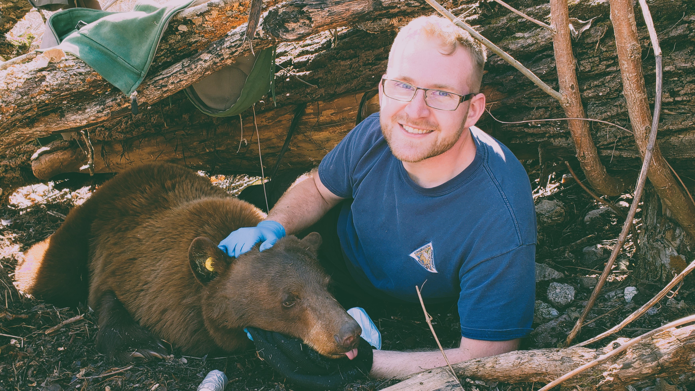

Welcome & Intros

In Brief
I am a dedicated wildlife ecologist and geospatial practitioner interested in advancing natural resource conservation. My work focuses on using data science and geospatial techniques to research and inform landscape and endangered resource conservation.
My Education
MA, Geography | University of Missouri-Columbia | Ant. May 2025
BS, Wildlife Ecology | University of Wisconsin-Stevens Point | May 2019
My Highlights
7+ years of progressive experience in conservation and environmental science.
Demonstrated experience with desktop, web, and mobile GIS software (e.g., Esri ArcGIS Pro, ArcGIS Online, ArcGIS Field Maps).
Proficient in working with Microsoft Office (e.g., Word, Excel, Access, Publisher, Outlook).
Working knowledge of R to perform statistical analyses, data wrangling, and data visualization.
Front-end web development experience using HTML and CSS coding languages.
Proficient in managing large dataset using standardized software and methods.
Skillful in cartographic design using open source and proprietary mapping applications.
Adept at using R Markdown and Quarto for reproducible reporting.
Active Projects & Gallery
“But I must explain to you how all this mistaken idea of denouncing pleasure and praising pain was born and I will give you a complete account of the system, and expound the actual teachings of the great explorer of the truth, the master-builder of human happiness. No one rejects, dislikes, or avoids pleasure itself, because it is pleasure, but because those who do not know how to pursue pleasure rationally encounter consequences that are extremely painful. Nor again is there anyone who loves or pursues or desires to obtain pain of itself, because it is pain, but because occasionally circumstances occur in which toil and pain can procure him some great pleasure. To take a trivial example, which of us ever undertakes laborious physical exercise, except to obtain some advantage from it? But who has any right to find fault with a man who chooses to enjoy a pleasure that has no annoying consequences, or one who avoids a pain that produces no resultant pleasure?”
Personal Writings
“At vero eos et accusamus et iusto odio dignissimos ducimus qui blanditiis praesentium voluptatum deleniti atque corrupti quos dolores et quas molestias excepturi sint occaecati cupiditate non provident, similique sunt in culpa qui officia deserunt mollitia animi, id est laborum et dolorum fuga. Et harum quidem rerum facilis est et expedita distinctio. Nam libero tempore, cum soluta nobis est eligendi optio cumque nihil impedit quo minus id quod maxime placeat facere possimus, omnis voluptas assumenda est, omnis dolor repellendus. Temporibus autem quibusdam et aut officiis debitis aut rerum necessitatibus saepe eveniet ut et voluptates repudiandae sint et molestiae non recusandae. Itaque earum rerum hic tenetur a sapiente delectus, ut aut reiciendis voluptatibus maiores alias consequatur aut perferendis doloribus asperiores repellat.”
Education
“On the other hand, we denounce with righteous indignation and dislike men who are so beguiled and demoralized by the charms of pleasure of the moment, so blinded by desire, that they cannot foresee the pain and trouble that are bound to ensue; and equal blame belongs to those who fail in their duty through weakness of will, which is the same as saying through shrinking from toil and pain. These cases are perfectly simple and easy to distinguish. In a free hour, when our power of choice is untrammelled and when nothing prevents our being able to do what we like best, every pleasure is to be welcomed and every pain avoided. But in certain circumstances and owing to the claims of duty or the obligations of business it will frequently occur that pleasures have to be repudiated and annoyances accepted. The wise man therefore always holds in these matters to this principle of selection: he rejects pleasures to secure other greater pleasures, or else he endures pains to avoid worse pains.”